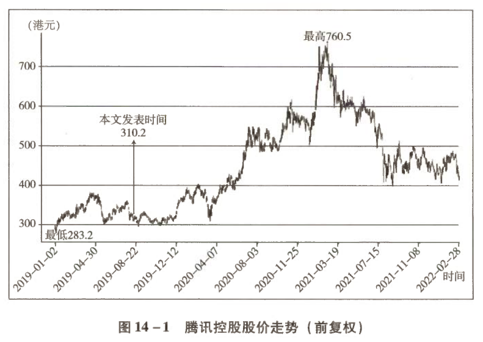

价值投资实战手册 · 第3篇 企业分析实战案例 · 第14章
腾讯控股的确定性
推荐人戴鑫：对一家企业未来情况"确定性"的判断直接影响我们的投资决策，这需要我们对企业有深入的学习和理解。本文以腾讯公司为例，站在2019年半年报的时间节点，对企业业务的现状及未来发展进行了评估，从而得出业务未来增长的确定性很高的判断。本文以真实企业为例，展示了如何通过企业看企业未来发展的确定性，值得深入体会和思考。
◆ ◆ ◆
财报总览：稳
腾讯2019年半年报的总体特色就一个字：稳。
| 时间维度 | 收入同比增长 | 归母净利润同比增长 | 非通用会计准则下归母净利润同比增长 |
|---|---|---|---|
| Q2单季 | 21% | 35% | 19% |
| 上半年 | 18% | 25% | 17% |
◆ ◆ ◆
一、游戏业务：板上钉钉的增长
1.1 手游强劲增长
- 增长率：手游同比增长 26%
- 端游趋势：继续延续萎缩大趋势
1.2 《和平精英》现象级表现
| 关键信息 | 数据 |
|---|---|
| 上线时间 | 2019年5月8日 |
| 吸金能力 | 迅速展示强大变现能力 |
| Q2贡献 | 时间限制，利润贡献有限 |
| Q3预期 | 影响主要从第三季度开始显现 |
重要趋势：近期三个月腾讯"吃鸡"手游（《和平精英》+《PUBG》）流水收入已经超过《王者荣耀》。
1.3 游戏矩阵全面开花
热门游戏包揽下载榜和收入榜前列已成常态：
- 经典产品：《王者荣耀》《和平精英》《PUBG》《QQ飞车》
- 新兴产品：《一起来捉妖》《跑跑卡丁车》《完美世界》《龙族幻想》《权力的游戏：凛冬将至》《王牌战士》
结论：第三季度乃至下半年腾讯手游的高增长已经不需要猜测，是板上钉钉的事。
◆ ◆ ◆
二、金融科技：处于战略扩张期
2.1 增长数据
| 指标 | 数据 |
|---|---|
| 金融科技及企业服务同比增长 | 37% |
| 不计算备付金利息收入政策性影响 | 57% |
2.2 业务构成
主要包括：
- 微信支付
- 理财保险
- 腾讯云
现状：目前还没有什么利润贡献。
2.3 战略定位
金融科技是腾讯从消费互联网向产业互联网扩张的重头戏，是未来腾讯的战略方向。
| 战略阶段 | 当前重点 |
|---|---|
| 战略扩张期 | 规模和市占率远比利润更重要 |
| 竞争格局 | 阿里巴巴 vs 腾讯两大巨头 |
| 市场前景 | 空间巨大，两家共同高速增长 |
预期：未来数年，两家共同取得高速增长的态势不会发生改变。
◆ ◆ ◆
三、广告业务：降低预期
3.1 增长数据
- 同比增长：23%
- 评价：相比腾讯拥有的资源而言，这个增长只能算一般般
3.2 影响因素分析
宏观经济因素
| 影响类型 | 具体表现 |
|---|---|
| 广告客户 | 对广告费用的缩减 |
| 腾讯自身 | 上半年销售及市场推广费用比上年同期减少30亿元 |
| 费用占比 | 从上年同期的8%降低为5% |
数据解读：上半年增加的约120亿元经营盈利，缩减的推广费用贡献了1/4。
竞争压力
头条系产品的挤压是目前市场看到的主要悲观因素：
- 信息流和短视频：头条系已经对腾讯形成绝对碾压式领先
- 腾讯反击：所有反击均脆弱无力，暂时看不到改变的可能
- 类比：如同腾讯在电商领域一直被阿里巴巴碾压一样
3.3 未来增长路径
| 增长来源 | 说明 |
|---|---|
| 传统广告渠道 | 抢夺电视、报纸、杂志、户外、梯媒，甚至传统搜索、网页等份额 |
| 份额分配 | 大块肉会被竞争对手拿走 |
| 腾讯产品 | 微信、QQ、小程序、长视频等产品尽力争取一些份额 |
3.4 增长潜力
相对于腾讯拥有的流量而言，产生的广告收入还非常低，有很多可以填充但一直没有被填充的广告位置存在。
核心原因：腾讯的日子一直很滋润，对于广告收入没有那么渴求，在收入和用户体验中腾讯更看重后者。
结论：降低预期，获取长期稳定的中速增长还是靠谱的。
◆ ◆ ◆
四、投资业务：媲美伯克希尔
4.1 市场分歧与确定性
投资部分是市场分歧较大的领域。但如果将目光稍微放长远一点，用常识就可以判断出这部分的增长其实恰恰是最没有悬念、确定性最高的。
4.2 资产结构分析
总体资产配置（总资产约8000亿元）
| 资产类别 | 规模 | 占比 | 构成 |
|---|---|---|---|
| 投资部分 | 4000亿元 | 50% | 联营、合营和部分金融资产 |
| 类现金资产 | 2000亿元 | 25% | 现金、存款、预付账款等 |
| 经营资产 | 2000亿元 | 25% | 固定资产、土地、存货、应收账款等 |
负债结构（总负债约4000亿元）
| 负债类别 | 规模 | 利率/成本 |
|---|---|---|
| 有息负债 | 2000亿元 | 约3%（千亿元借款年利率<2%，千亿元票据年利率2.9%～4.8%） |
| 经营性负债 | 2000亿元 | 预收、应付 |
关键特征：企业信用良好，现金流持续可观，2000亿元有息负债不仅全部为无抵押，而且利率很低。
4.3 业务模式解读
核心业务
以QQ和微信形成的消费者黏性为土壤，以约2000亿元经营资产及2000亿元类现金资产，支撑：
- 社交
- 游戏
- 广告
- 内容
- 支付
- 金融
- 云
成果：上半年产生税前利润大约450亿元。
风险投资基金（VC）模式
| 基金特征 | 具体内容 |
|---|---|
| 资金规模 | 4000亿元 |
| 资金来源 | 利用自身信用优势加杠杆，获取成本约3%的2000亿元有息负债 + 成本为0的2000亿元经营性负债 |
| 投资领域 | 主要投资移动互联网领域 |
| 投资标的 | 几百家从初创到已上市的企业 |
| 上半年收益 | 约150亿元税前利润 + 约150亿元公允价值增长（未计入利润） |
4.4 VC基金的四大特点
| 特点 | 说明 |
|---|---|
| 1. 流量优势 | 自身拥有巨大无比的、可以视为零成本的闲余流量可供输出 |
| 2. 市场空间 | 行业增长空间巨大（人类还有近于无限多的需求，等待用移动互联网手段去深化和优化） |
| 3. 操盘团队 | 全世界最懂互联网、曾经和正在获得辉煌战绩的领先人群之部分构成 |
| 4. 利益绑定 | 这部分人的绝大部分身家也投在这个VC里 |
4.5 与伯克希尔的对比
腾讯像不像伯克希尔？很像，只不过投资专注领域和巴菲特有区别。
| 对比维度 | 腾讯VC基金 |
|---|---|
| 资金成本 | 平均不到2% |
| 资金性质 | 长期资金杠杆 |
| 投资基础 | 扎根在微信和QQ提供的土壤里 |
| 投资策略 | 在能力圈范围内，聚焦投资一个前景广阔的行业 |
核心判断：无论今天在报表上显示的数字是多少，这4000亿元投资带来的长期投资回报必然远高于名义GDP增长速度。
4.6 不确定性的澄清
所谓腾讯投资的不确定性，只是投资者过于看重某一个具体的项目。
正确视角：如果将全部投资看作一个专注于投资移动互联网及其相关领域的风险投资基金，腾讯投资部分不仅历史成绩优异，未来可以预见会继续优异。
◆ ◆ ◆
五、整体确定性评估
如果能抛开对股价的猜测，退后一步看腾讯：
| 业务领域 | 确定性评价 |
|---|---|
| 增值服务 | 相当高 |
| 网络广告 | 相当高 |
| 金融科技 | 相当高 |
| 对外投资 | 相当高 |
总结：几乎每一个领域的增长确定性都相当高，这也是喜欢它的原因。
◆ ◆ ◆
六、估值与投资展望
6.1 当前估值（2019年8月）
| 估值指标 | 数据 |
|---|---|
| 预计2019年净利润 | 1000亿元上下 |
| 当前市值 | 约2.8万亿元 |
| 市盈率 | 约28倍 |
| 无风险收益率 | 3%～4% |
估值判断：基本就是合理估值位置。合理估值，占不到估值上的便宜，只能获取企业成长收益。
6.2 未来三年预测（2022年）
| 假设场景 | 年均增长速度 | 2022年净利润预测 | 对应合理市值 |
|---|---|---|---|
| 悲观 | 20% | 1700亿元 | 50000亿元 |
| 乐观 | 30% | 2200亿元 | 60000亿元 |
关键观点：至于市场在此基础上究竟给出15倍还是50倍市盈率的股价，就完全不在考虑范围内了——主要是考虑了也没有用。
6.3 实盘投资记录
| 投资信息 | 数据 |
|---|---|
| 买入起始时间 | 2017年1月，197.3港元 |
| 操作策略 | 一直是买家，只有买入从无卖出 |
| 加仓时机 | 借着2021年至2022年互联网企业整体大跌的机会 |
| 当前仓位 | 约38%（2022年2月底数据） |
| 仓位排名 | 实盘第一重仓股 |
| 平均成本 | 约465港元 |

◆ ◆ ◆
📊 结语
腾讯未来发展如何，这笔投资未来是赚是赔，让我们静待时间给出的结果。